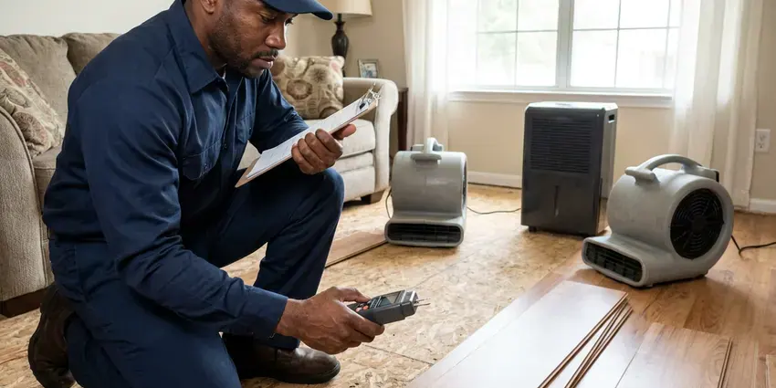

Gas Line Repair in Euclid, OH
Got a red tag from the utility in Euclid, OH? We repair the line, get it holding pressure and help get the meter unlocked.
- Written Prices Before Work
- Certified Technicians
- Pressure Tested to Code
- Permit and Utility Coordination

Gas Line Leak in Euclid, OH?
Call (740) 449-7505 and a licensed plumber will find the leak and give you a written price.
Experienced Gas Line Plumbers in Euclid, OH
HRL Plumbing repairs gas piping in homes and businesses across Euclid, OH, from a weeping union behind the water heater to a corroded steel line under the lawn. Every job ends with a test. The system gets pressurized and watched on a gauge for the code-required time, and nothing counts as finished until it holds with zero drop. That test is what the inspector and the utility look for.
Work we handle every week:
- CSST repair, bonding checks and connector upgrades
- Appliance shutoff valve and connector replacement
- Leak detection on risers, yard lines and appliance connections

Additional Plumbing Maintenance Services in Euclid, OH
Our maintenance and specialty plumbing services in Euclid, OH protect your home year-round and extend the life of every system.


Customers
Why Choose HRL Plumbing for Gas Line Repair in Euclid, OH?
You will know what failed and why. Our plumber shows you the leak, explains the repair options and puts the price in writing before any pipe gets cut. Clear prices prevent surprises. If the line needs a permit, we pull it and schedule the inspection, which keeps the utility from holding up your service longer than needed.
- Quick Response, Gas outages mean no heat or hot water, so we move gas calls to the front of the line.
- Code Compliance, Repairs meet Ohio building codes, including sizing, sediment traps and shutoffs.
- Written Prices, You get the repair price on paper before any pipe is cut.
Citywide Coverage
Gas line service reaches all of Euclid, OH and the surrounding towns. Most calls get same-day help. Homes on natural gas and homes on propane tanks both get the same service, and we handle the regulators, yard lines and appliance hookups on either system.
Experienced Team
Our gas plumbers have years of experience on residential and light commercial gas systems. They size lines, test systems and repair leaks every week. Training keeps them current on fuel gas code changes, CSST bonding rules and new fitting systems, because those details change more than people expect.
Safety-First Approach
Every gas line repair in Euclid follows state and local codes. Code covers sizing, materials, supports, shutoffs and drip legs. We file the permit. Following those rules is how a repair passes inspection the first time and stays safe and leak-free for the long run.
Trusted Certified Euclid Plumbing Services Professionals
At HRL Plumbing, we take pride in licensed, certified plumbing services throughout Euclid, OH. Credentials matter in this trade. Every repair, install and maintenance visit follows strict safety and quality rules, and the plumbers doing the work carry recognized industry credentials.
Call Us Now PHCC Plumbing Contractor Recognition
PHCC Plumbing Contractor Recognition Better Business Bureau (BBB) Accreditation
Better Business Bureau (BBB) Accreditation Angi Certified Pro
Angi Certified Pro ISO 9001 Quality Management Certification
ISO 9001 Quality Management CertificationGas Line Repair Services in Euclid, OH
Gas Shut Off by the Utility in Euclid
When your utility shuts off gas for a leak, you may be without hot water, heat or cooking until a licensed plumber fixes it. We respond quickly, locate the leak, make the repair and run the pressure test the utility needs to see before it will restore service. The truck carries what we need. We do not leave until the gauge holds steady and the system is ready for the utility.

Corroded Gas Pipe Replacement in Euclid
Buried steel gas line corrodes once its coating cracks, and moisture, roots and ground movement speed it up. Basements are standard in most homes, and many rely on sump pumps to handle groundwater away during wet periods. Rusted buried steel gets replaced with polyethylene and tracer wire, and we use a listed transition riser where it rises to the house. Above-ground runs stay in steel. Everything is tested before the trench is backfilled, so a bad joint gets caught while it is still easy to reach.
Gas Line Repair Costs in Euclid, OH
Simple connector or fitting repairs often cost $150 to $450. Replacing a section of interior pipe usually runs $400 to $1,200, while buried yard line replacement can range from $1,000 to $4,000 or more depending on length and digging conditions. Tough digging raises labor. The written price includes the permit fee and is set before work begins.
Propane Gas Line Service in Euclid, OH
Propane systems run at different pressures than natural gas and use a two-stage regulator setup between the tank and the house. Regulators fail too. We repair buried and above-ground propane lines, replace leaking regulators and fittings and check that each appliance has been converted with the correct orifices for propane. A natural gas burner running on propane will burn rich and soot up. The test procedure is the same as for natural gas.
Appliance Connector and Shutoff Repair in Euclid
Old flexible connectors, especially uncoated brass ones, crack and leak with age. New coated stainless connectors go on, sized to the appliance, with a reachable shutoff valve if the old one is stuck or missing. Usually under an hour per appliance. Furnaces, water heaters, ranges and dryers each need a sound connection, and most need a drip leg before the appliance valve.
CSST Repair in Euclid
Corrugated stainless steel tubing is a flexible gas pipe with a plastic jacket, often yellow, that runs through attics and walls in newer homes. It can be damaged. Common damage comes from nails, rodents or lightning, and repairs require cutting out the bad section and using fittings from the same manufacturer. We check bonding on every CSST job. The system should be bonded to the electrical grounding system with a proper clamp and conductor, per the manufacturer's instructions and local code.
Natural Gas Leak Detection and Repair in Euclid
Finding a gas leak starts at the meter. We shut off every appliance and watch the meter's test dial, then close branch valves one at a time to find which section is leaking. A combustible gas detector narrows it further. Soap solution at the suspect fitting confirms it with bubbles, and then we repair the joint, replace the section or swap the connector before testing again.

Interior Black Iron Pipe Repair in Euclid
Threaded black iron pipe can leak at joints after years of vibration or settling. We tighten, reseal or replace fittings and sections with new pipe and gas-rated thread sealant. Rusted pipe goes too. Pipe in a garage, crawlspace or exterior wall that shows heavy rust gets replaced before it turns into a leak, and the whole system gets a pressure test after the repair.
Gas Leak Repair Near You in Euclid, OH
Our plumbers live and work around Euclid, OH, and gas line calls are a regular part of the week. Nearby crews respond fast to leaks and red tags. Out-of-town outfits can take days to schedule, and we can usually have a plumber there the same day or the next morning.
Searching for a gas plumber nearby makes sense, since local crews know the utility, the inspectors and the permit office. We pull permits for gas work in Euclid regularly, so we know exactly what the inspector checks on the gauge and the paperwork. Inspections go faster that way.
HRL Plumbing at a Glance
- Fully licensed plumbing team covering Euclid, OH
- Same-day appointments and 24/7 emergency response
- Clear written estimates, no hidden fees
- 4.9-star rated by 673+ Ohio customers
Euclid Map
Euclid Information
- Population
- 48,212
- Area codes
- 216/440/330
- Service area
- Euclid and towns within a 40 mile drive
- Nearby
- Cleveland, Mentor, Lakewood, Parma
Buried gas lines in Euclid, OH live in ground that shifts and stays damp, and both wear on pipe and fittings over the years. Basements are standard in most homes, and many rely on sump pumps to handle groundwater away during wet periods.
Expert Services
Reach out to HRL Plumbing for reliable plumbing work done by licensed pros in Euclid, OH.
Our Specialized Plumbing Services in Euclid, OH
At HRL Plumbing, we handle the full list of plumbing services across Euclid, OH. From leak detection to full system installs, our team works fast and charges fair prices on homes and commercial properties alike. Explore our core services below:


From Leak to Restored Service in Euclid, OH
Gas line repair with us is tested, permitted and done carefully from start to finish.
Call Us
Call HRL Plumbing at (740) 449-7505 to schedule a visit. We ask a few questions about the smell, the appliance or the red tag and set a time.
Find the Leak
A licensed plumber comes to your Euclid property and tests the system with a detector and gauge to find the exact leak.
Repair to Code
You get a written price before any work. We then replace the damaged pipe, fitting or connector with listed materials.
Frequently Asked Questions About Gas Line Repair in Euclid
A small fitting repair in Euclid can be around $250. Big jobs cost more. Trenching a long yard line or cutting through concrete can push the price to $5,000 or more, depending on length and access. You get the number in writing first.
A rotten egg smell is the big one, since utilities add a sulfur odorant to natural gas. Hissing is another sign. Dead grass over a buried line, a hiss at a fitting or a moving meter with everything off all point to a leak, and the right move is to get out and call the utility.
Simple repairs take an hour or two. Buried yard line replacements often take a full day, plus inspection time if a permit is needed.
Gas piping should be repaired by a licensed professional. A bad repair risks fire or CO exposure and may fail inspection.
There is no required yearly inspection for most homes. A look every few years helps older houses. It is worth a check if your home has old uncoated brass connectors, buried steel yard lines from decades ago or appliances that are burning with yellow or lazy flames, since those are common warning signs.
Gas lines do not need routine service the way a water heater does. Checks still help. On other service calls we can check exposed gas pipe, connectors and valves and flag old connectors, missing drip legs or rust before it becomes a leak.
Leave the building right away and do not use switches or flames. Call your gas utility or 911 from outside, and once the utility makes it safe, call us for the repair.
Tightening a union or swapping a connector takes an hour or two. Buried lines take longer. Replacing a long section of buried line usually takes most of a day for digging, laying pipe, testing and backfill, plus whatever time the inspection needs.
What Our Customers Say About Our Plumbing Experts

Brian W.
I smelled gas behind the dryer and called right away. The plumber found a corroded flex connector, replaced it, and pressure tested the whole line before turning the gas back on. He let me watch the gauge hold steady for fifteen minutes.
Gas Line Repair · Mentor, OH
Sofia M.
Two new toilets went in during one visit. The tech set them on new wax rings and swapped the old supply lines. He also noticed our bathroom faucet dripping and replaced the cartridge while he was there. No mess left behind.
Toilet Installation · Cleveland, OHMark T.
The floor drain in our office break room backed up every few weeks. The plumber ran a cable, then put a camera down and found roots at a joint about thirty feet out. Seeing it on the screen made the decision easy.
Drain Cleaning · Mentor, OH
James P.
Our restaurant had a slow leak at the hand sink that was rotting the cabinet base. HRL Plumbing came in at six in the morning before prep, replaced the trap and both supply lines, and was packed up before my first cook clocked in.
Commercial Plumbing · Lakewood, OHPaul B.
Our pit pump ran nonstop even in dry weather. The plumber found the check valve was stuck open, so the same water kept cycling back into the pit. New valve, new float switch, done in an hour. It runs quiet now.
Sump Pump · Cuyahoga Falls, OH
Angela D.
Our sump pump quit during a storm and the water was an inch from the basement carpet. HRL Plumbing put in a new pump with a battery backup that same evening. We have had two heavy rains since. It kicked on both times.
Sump Pump · Euclid, OH